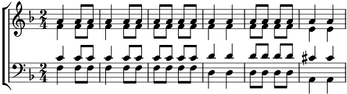

Gerusalemme
Ré mineur
Paroles: Bepi De Marzi
Musique: Bepi De Marzi

Gerusalemme, città di pietre bianche,
cuore inaridito, anima perduta.
Cos'hai fatto sul Monte Calvario, dimmi, cos'hai fatto?
Gerusalemme, città di rose rosse,
cuore di pietra, anima perduta.
Gerusalemme, città di pietre bianche
guarda chi piange ai piedi della croce:
Piange Maria,
e intorno si fa sera.
Non lasciate sola la madre di Gesù.
Dove sono gli angeli che nella notte santa cantavano la pace?
Piange, Maria
e intorno si fa sera. Sera.